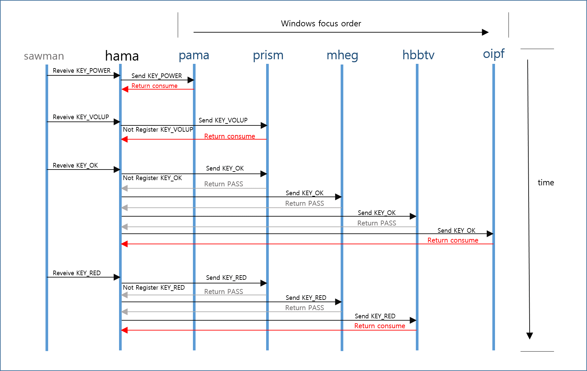

본 문서는 OCTO 2.x 프로젝트 에 포함 되어 있는 HAMA에 대하여 개발자들의 이해를 돕기 위해 작성된 문서이다.
본 문서는 HUMAX APPLICATION MANAGER 인 HAMA에 대한 문서로 OCTO2.2에서 각 PROCESS 들을 어떻게 관리하고 소통하게 하는지에 대한 전반적인 내용을 설명한다.
HAMA란 Humax Application Manager의 약자로써 실질 적인 거의 모든 프로세스의 실행과 프로세스 간 의 통신을 관리 하고 dfb master와 sawman을 이용하여 window의 key 전달을 관리 한다. 각각의 프로세스 들을 관리할 목적이면 HAMA 내부에서 처리하게 될 것이다.
아래 그림은 Hama의 전체적인 기능을 설명하기 위한 용도로 제작 되었다. HAMA의 가장 기본적인 역할은 각각의 Process들을 Launching 해주는 것이다. 각 프로젝트의 rootfs에는 /home/hconfig.cfg 에 명시 되어있는 process들을 순차적으로 수행하는 기능을 가진다.
또한 HAMA는 각 process 들간의 통신을 위해 signal broadcasting을 제공하고 공유 가능한 DB용으로 Registry를 운용하고 있다. registry 정보는 /var/lib/humaxtv/registry.reg 에 저장 되고 이정보를 토대로 여러 Process 들이 정보를 교환 할 수 있다.
마지막으로 Key Manager 기능이다. 우선 Octo 2.2 에서는 DFB Master를 사용하여 window를 관리 한다. 하지만 STB 특정 상 여러 윈도우가 없는 process들도 key를 처리해야 하는 상황이 생긴다. 하여 Window를 통해서만 key를 관리하는 DFB Master만으로 운용이 힘들다. 하여 여러 application들의 window를 관리해주는 saw man을 통해 window 정보 및 key 정보를 얻어와 별도의 ordering을 이용하여 필요한 process(window가 없는 process 포함) 들에게 key를 전달해주는 기능을 수행한다.
Humax Octo2.2에서 각 프로세스들은 Hamalauncher에 의해 실행 된다. Hama는 /etc/init.d/S90settop script에 의해 실행 된다.
S90settop
exec dfbmaster &
exec /home/hamalauncher &
exec /home/hama &
Hanalauncher 에 의해 모든 process 들이 싱행된다. Hama launcher는 /home/hconfig.cfg 파일을 읽어 들여 process 를 exec 한다.
/home/hconfig.cfg
{"name":"thma", "exec":"/home/thma/thma"},
{"name":"pama", "exec":"/home/pama/pama", "term":1},
{"name":"sama", "exec":"/home/sama/sama"},
{"name":"nima", "exec":"/home/nima/nima", "term":1},
{"name":"obama", "exec":"/home/obama/obama", "term":1},
{"name":"ipepg", "exec":"/home/ipepg/ipepg", "condition":"obama"},
{"name":"remoteapp", "exec":"/home/remoteapp/remoteapp", "condition":"obama"},
{"name":"restsvr", "exec":"/usr/bin/node", "condition":"homma","arguments":[{"arg":"/home/node/app.js"}]},
위와 같은 순서로 process 들이 실행 된다.
각 process 는 오류로 인해 kill 되어지면 hamalauncher가 monitoring 하고 있다가 restart 한다.
단, term : 1로 setting 되어진 process 들은 restart 하지 않는다.
또한 condition : Obama 와 같은 형태로 설정된 process 들은 obama에서 init이 완료된 후에 exec 된다. Process 간 dependency 를 표현한다.
각 프로세서들은 자신이 initialize를 끝냈다는 것을 HAPI_SendReadySignal() 을 이용해 hamalauncher 에 알린다.
추가적으로 arguments 가 있는데 실행할 프로세스에 argument를 전달 할때 필요 하고 아래 와 같이 사용한다.
"arguments": [{"arg": "argument1"}, {"arg": "argument2"}, {"arg": "argument3"}, ... ]
Window Manager는 각각의 process와 sawman을 통해 윈도우 정보를 획득하여 내부 cache에 저장한다. 저장된 cache를 이용하여 현재의 window 의 plane order와 focus order를 조정한다. 이를 토대로 하여 process에서 plane order 변경을 요청하면 이를 sawman에 전달 한다. Dfbmaster 에서 sawman을 통해 전달 된 키 정보를 모든 focus order를 가진 process에게 전달 한다.
키 전달 방식을 보면 아래와 같다. 
첫 번째, KEYPOWER가 올라오면 HAMA에서는 forcus order 순으로 먼저 pama에게 key를 전달한다. Pama는 KEYPOWER를 사용하고 consume 을 HAMA에게 return 해주면 HAMA는 KEY_POWER 정보를 삭제 한다.
두 번째, KEYVOLUP을 sawman에서 받은 HAMA는 focus order상에 pama의 정보를 확인 한다. Pama의 경우 KEYVOLUP을 HAMA에 등록해 두지 않은 상태여서 HAMA는 pama를 건너 뛰고 다음 focus order인 prism에 KEYVOLUP을 보낸다. prism에서는 KEYVOLUP 정보를 volume control하는 prism UI에서 사용 하고 consume을 HAMA에게 return 하고 HAMA는 이를 받아 삭제 한다.
세 번째, KEYOK를 받은 HAMA는 pama에서 KEYOK를 등록 하지 않았기 때문에 다음 window 인 PRISM에 전달 한다. PRISM은 자신이 사용할 필요가 없기 때문에 pass를 return 하고, HAMA는 다음 wiondow 인 MHEG에게 전달한다. 마찬가지로 MHEG과 HBBTV는 사용하지 않기 때문에 pass를 return 하게 되고, HAMA는 최종 oipf 에게 전달된다. oipf에서는 KEYOK를 받아 channel list를 띄우고, consume 을 return한다. HAMA는 이를 받아 KEYOK 정보를 삭제 한다.
마지막으로 KEYRED에 대하여 살펴보자. KEYRED는 위의 KEY_OK와 마찬가지로 HBBTV까지 전달 된다. HBBTV는 HBBTV Launch를 위해 KEYRED를 사용한다. KEYRED를 사용하고 HAMA에게 consume을 return 하고, HAMA는 OIPF window가 남아있지만 사용된 KEY로 인식하고 정보를 삭제하고 OIPF에게는 KEY 정보를 보내지 않는다.
HAPI_ReturnKeyEvent(HWINID_e eAppId, HInputRetType_e eRetType, HInputEvent_t *pEvent);
// key를 사용한 후 사용 결과를 return
HAPI_GetInputEvent(HWINID_e eApplId, HInputEvent_t *pstInputEvent, HINT32 nTimeout);
// Key를 받기 위해 사용 하는 함수.
HAPI_AddVirtualWindow(HWINID_e eAppId);
// Key를 받기 위해 가상 윈도우를 추가해야함.
HAPI_RegisterAcceptableKey(HWINID_e eTargetId, HUINT32 eSymbol, HBOOL bRegister);
// 받기를 원하는 key를 hama에 등록한다.
HAPI_SetWindowStyle(HWINID_e eTargetId, HWINDOWSTYLE_e eWindowStyle, HBOOL bClear);
// window 및 key input 관련 style을 설정한다.
HAPI_SendReadySignal(pid_t pid);
// process가 init 과정을 완료 하면 해당 함수를 이용하여 signal을 보낸다.
HAPI_SendRemoteRCUKey(HUINT32 ulKeySymbol);
// 강제로 특정 RCU를 뿌리게 하는 함수.
default order 정보는 아래와 같이 시나리오로 정의 되어있다.
static SCENARIO_t _astScenarioList[] =
{
// window id focus stack panel
{ eAWINDOW_HAMA, 0x2000, 0x0000, 0x0000},
{ eAWINDOW_DAMA, 0x2000, 0x0000, 0x0000},
{ eAWINDOW_TR069, 0x2000, 0x0000, 0x0000},
{ eAWINDOW_PAMA, 0x1000, 0x0000, 0x0000},
{ eAWINDOW_TESTAPP, 0x0990, 0x0000, 0x0000},
{ eAWINDOW_GWMPOPUP, 0x0900, 0x0100, 0x0200},
{ eAWINDOW_KEYBOARD, 0x0901, 0x0101, 0x0300},
{ eAWINDOW_SUBTITLEPLAYER, 0x0500, 0x0500, 0x0000},
{ eAWINDOW_MHEGPLAYER, 0x0800, 0x0400, 0x0000},
{ eAWINDOW_MHEGPLAYER_IMG_STILL, 0x0100, 0x0401, 0x0000},
{ eAWINDOW_MHEGIB, 0x0900, 0x0400, 0x0000},
{ eAWINDOW_OIPF, 0x0600, 0x0301, 0x0100},
{ eAWINDOW_HBBTV, 0x0601, 0x0302, 0x0100},
{ eAWINDOW_BSAUTOMSG, 0x0602, 0x0320, 0x0100},
{ eAWINDOW_OTVB, 0x0603, 0x0310, 0x0100},
{ eAWINDOW_OTVS, 0x0604, 0x0310, 0x0100},
{ eAWINDOW_WIND3, 0x0610, 0x0350, 0x0100},
{ eAWINDOW_JAPAN_NATIVE_UI, 0x0804, 0x0501, 0x0000},
{ eAWINDOW_ARIBCC_SUP, 0x0803, 0x0400, 0x0000},
{ eAWINDOW_ARIBCC_CAP, 0x0802, 0x0401, 0x0000},
{ eAWINDOW_BML, 0x0801, 0x0500, 0x0000},
{ eAWINDOW_BMLSTILL, 0x0800, 0x0501, 0x0000},
{ eAWINDOW_RFVOD, 0x0850, 0x0350, 0x0000},
{ eAWINDOW_ANDROID, 0x0902, 0x0600, 0x0000},
};
hama는 process이 서로에게 자신의 상태를 알릴수 있고 다른 process들의 상태를 얻을 수 있도록 signal broadcasting 정보를 제공한다.
각 프로세스들은 다른 process 에게 특정 정보를 보내고 싶을 경우 아래 함수를 호출한다.
HAPI_BroadcastSignal(const HCHAR *pszSignalName, HBOOL bBuffered, void * pvData);
// pszSignalName : 보내고자 하는 시그널 name
// bBuffered : 받을 process가 받을 상태가 아니더라도 추후에 signal connecting 을 하면
// 마지막 해당 signal에 대한 정보를 받아 볼수 있도록 하고 싶을 경우
// true로 선택한다.
// pvData : 해당 시그널과 함께 보낼 data
특정 signal 을 받고 싶은 process들은 다음 함수와 함께 callback을 등록 하면 된다. 보내는 쪽에서 bufferd signal로 등록 해 놓은 signal들은 아래 함수들을 등록하는 순간 hama에 저장 되어진 bufferd signal을 callback으로 전달 받게 된다.
HAPI_ConnectSystemSignal(const HCHAR *pszSignalName, void * pvData,HxRPC_Noti_t cbRpcNotifier)
// pszSignalName : 받기를 원하는 system signal name
// cbRpcNotifier : SystemSignal이 발생하면 호출 되어질 callback function
// 사용중인 시스템시그널.
// -- hama:onReadyProcess
// -- hama:onRegistryChanged
// -- hama:onPanelPriority
HAPI_ConnectSignal(const HCHAR *pszSignalName, void *pvUserData, HxRPC_Noti_t cbRpcNotifier)
// system signal을 제외한 signal을 받기 위해 사용한다.
// pszSignalName은 다음 과같은 naming 방식을 따른다. "**signal:onS**ubtitle**S**tate"
registry는 process간 공유가 필요한 data를 db처럼 사용가능 하도록 하기 위해 HAMA에서 제공하는 기능이다.
이 정보들은 비 휘발성으로 "/var/lib/humaxtv/registry.reg" 에 json 형태로 저장 된다.
저장되어진 값은 아래와 같이 확인이 가능하다.
내용을 보면 "net0dhcp"은 data 의 key가 되고 해당 key에 대하여 {"owner":"nima","value":0} 와 같이 value 값 외에 write 권한을 가진 owner가 존재 한다. "net0dhcp"에 대한 owner는 nima고 value는 0임을 확인 할수 있다.
{
"net_0_dhcp" :{"owner":"nima", "value":0 },
"LastMasterUid" :{"owner":"prism", "value":164 },
"maturiyrating" :{"owner":"obama", "value":0 },
"gmtoffset" :{"owner":"obama", "value":60 },
"SATIP_DEVICE_ID_KEY":{"owner":"homma", "value":0 },
"operatortype" :{"owner":"obama", "value":"none" },
"countrycode" :{"owner":"obama", "value":630 },
"audiolang0" :{"owner":"obama", "value":"ger" },
"audiolang1" :{"owner":"obama", "value":"ger" },
"hardofhearing" :{"owner":"obama", "value":0 },
"endpadding" :{"owner":"obama", "value":180 },
.
.
.
}
관련 API 함수는 다음과 같다.
HAPI_RemoveRegistry(void);
// Registry를 삭제한다.
HAPI_SetRegistryListener(void *pvUser, CBHAPIRegHandler pfnRegHandler);
// 특정 registry가 변경 되면 pfnRegHandler를 이요하여 noti 해준다.
#define HAPI_SetRegistryInt(pszKey, nValue)
#define HAPI_GetRegistryInt(pszKey, pnValue)
// int data를 Set/Get 할 경우 사용한다.
#define HAPI_SetRegistryStr(pszKey, pszValue)
#define HAPI_GetRegistryStr(pszKey, pszValue, nMax)
// string data를 Set/Get 할 경우 사용한다.
#define HAPI_SetRegistryEnum(pszKey, pszTagType, nEnum)
#define HAPI_GetRegistryEnum(pszKey, pszTagType, pnEnum)
// enum data를 string으로 Set/Get 할 경우 사용한다.
#cmdconsole
#root:>hama
#hama:>hamacmd
#hama:hamacmd>help
printreg : printreg
// hama에 등록되어있는 registry 정보를 모두 표시한다.
printmem : VmRSS : Physically used, VmSize : Virtually used
// process 들의 memory 정보를 표시한다.
remove : remove application
// hama에서 pid에 해당하는 process 정보를 모두 삭제한다.
changeorder : change stack or focus order : changeorder (0:1)(focus:window) targetid baseid (0:1)(up/down)
// window의 focus order를 변경한다.
print : hama process info print
// ex)print 1006 => 1006 은 pid 이고 <0 이면 모든 process를 표시한다.
printorder : window priority status
// 등록된 window들의 ordering 정보를 표시한다.
printrpc : print rpc
// hama에 등록되어진 rpc 정보를 모두 표시한다.
#hama:hamacmd>print 1006
// 1006 은 pid 이고 >0 이면 모든 process를 표시한다.
ProcessInfo
-- ProcessName : [prism]
-- PID : [1006]
-- Socket Handle : [5106228]
-- state : [5106228]
-- Running : [1943 sec]
Window(Application) List
- applId [0x00000005] hookProcessPid [0] Pid [1006]
- alreadyRemovePlane(0) nCurrentOpacity(ff) nLogicalOpacity(ff)
- style [0x00000015] focus [0x00000900] stack [0x00000100] panel [0x00000200]
- SaWManWindowHandle [0x2109d000] dfbWindowId [0x00000001]
- applId [0x00000009] hookProcessPid [0] Pid [1006]
- alreadyRemovePlane(0) nCurrentOpacity(ff) nLogicalOpacity(ff)
- style [0x00000011] focus [0x00000500] stack [0x00000500] panel [0x00000000]
- SaWManWindowHandle [0x2109dc00] dfbWindowId [0x00000002]
- applId [0x00000009] hookProcessPid [0] Pid [1006]
- alreadyRemovePlane(1) nCurrentOpacity(00) nLogicalOpacity(00)
- style [0x00000001] focus [0x00000500] stack [0x00000500] panel [0x00000000]
- SaWManWindowHandle [0x2109d400] dfbWindowId [0x00000004]
#hama:hamacmd>printreg
=== HAMA REGISTRY ===
[ nima] [ net_0_dhcp] (0)
[ prism] [ LastMasterUid] (155)
[ obama] [ maturiyrating] (0)
[ obama] [ gmtoffset] (60)
[ homma] [ SATIP_DEVICE_ID_KEY] (0)
[ obama] [ operatortype] (none)
[ obama] [ countrycode] (630)
[ obama] [ audiolang0] (ger)
[ obama] [ audiolang1] (ger)
[ obama] [ hardofhearing] (0)
[ nima] [ net_0_gateway] (192.168.11.1)
[ pama] [PowerSavingOnStandby] (1)
[ obama] [ endpadding] (180)
[ pama] [ LastStandby] (0)
[ nima] [ bt_enable] (0)
[ obama] [ antennaconnection] (error)
[ obama] [ timeupdate] (0)
#hama:hamacmd> printmem
Name: hamalauncher
VmSize: 6568 kB
VmRSS: 1572 kB
Name: dama
VmSize: 18160 kB
VmRSS: 9404 kB
Name: pama
VmSize: 9208 kB
VmRSS: 1840 kB
Name: thma
VmSize: 14084 kB
VmRSS: 2952 kB
Name: nima
VmSize: 16508 kB
VmRSS: 4412 kB
Name: sama
VmSize: 12276 kB
VmRSS: 2820 kB
Name: umma
VmSize: 19012 kB
VmRSS: 5480 kB
Name: imma
VmSize: 48008 kB
VmRSS: 11756 kB
Name: obama
VmSize: 116832 kB
VmRSS: 16416 kB
#hama:hamacmd> remove 1006
[hama_command_remove_delete_application,277] pid : 1006, nMonitor : 1
<--------------- Do not NEED Anymore.... [hama_command_doHamaApplicationDelete][222]
<--------------- Do not NEED Anymore.... [hama_command_doHamaApplicationDelete][223]
<--------------- Do not NEED Anymore.... [hama_command_doHamaApplicationDelete][224]
<--------------- Do not NEED Anymore.... [hama_command_doHamaApplicationDelete][225]
#hama:hamacmd> printorder
[ Window List Focus Order ]
windowID : 0x0 , applID: 0x4, stackPriority : 0x0, FocusPriority : 0x1000 processName : pama
windowID : 0x1 , applID: 0x5, stackPriority : 0x100, FocusPriority : 0x900 processName : prism
windowID : 0x3 , applID: 0x14, stackPriority : 0x400, FocusPriority : 0x900 processName : mhegib
windowID : 0x5 , applID: 0x12, stackPriority : 0x310, FocusPriority : 0x604 processName : corsair
windowID : 0x6 , applID: 0xF, stackPriority : 0x302, FocusPriority : 0x601 processName : corsair
windowID : 0x7 , applID: 0x10, stackPriority : 0x301, FocusPriority : 0x600 processName : corsair
windowID : 0x2 , applID: 0x9, stackPriority : 0x500, FocusPriority : 0x500 processName : prism
windowID : 0x4 , applID: 0x9, stackPriority : 0x500, FocusPriority : 0x500 processName : prism
#hama:hamacmd> printrpc
void hama.window.sendkey (HINT32 integer, void *pvData, int size)
send key event (HWINID_e eWinId (eAWINDOW_HAMA means traverse key events), HInputEvent_t)
void hama.window.deforder (HINT32 integer, HINT32 integer)
set order default : (HWINID_e eWindowId, HSTACKTYPE_e)
void hama.window.active (HINT32 integer, HINT32 integer)
active window : (HWINID_e eWindowId, HBOOL bActive)
void hama.registry.set (HINT32 integer, const HCHAR *string)
HaMa Registry Set (HINT32 progId, HCHAR *jsonString)
void hama.process.dfbready (void)
dfb is ready : NULL
void hama.window.regkey (HINT32 integer, HINT32 integer, HINT32 integer)
callback signal:onMsgboxShow (void *pvData, int size)
callback signal:onRpPeriodChanged (void *pvData, int size)
callback signal:onSystemLanguageChanged (void *pvData, int size)
callback signal:onSurferShutdown (void *pvData, int size)
callback signal:onOtaStateChanged (void *pvData, int size)
callback signal:onFactoryDefault (void *pvData, int size)
callback signal:onStartPortal (void *pvData, int size)
(R)callback signal:onFontTypeChanged (HINT32 integer)
(R)callback signal:onSystemStateChanged (HINT32 integer)
(R)callback signal:onBootupStateChanged (void *pvData, int size)
.
.
.